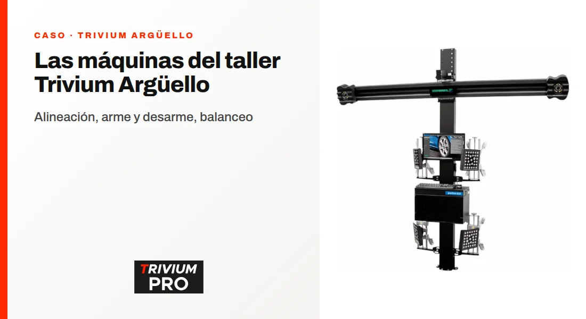
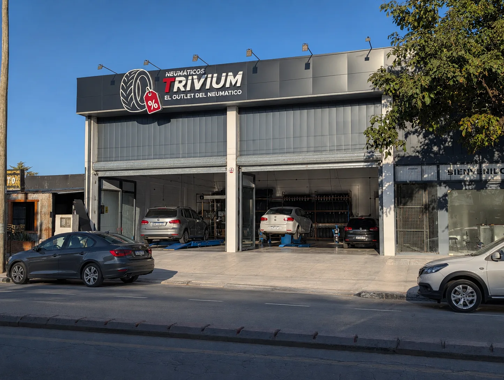
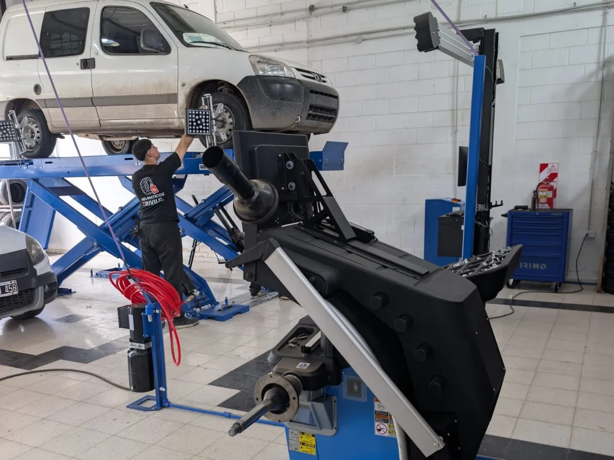
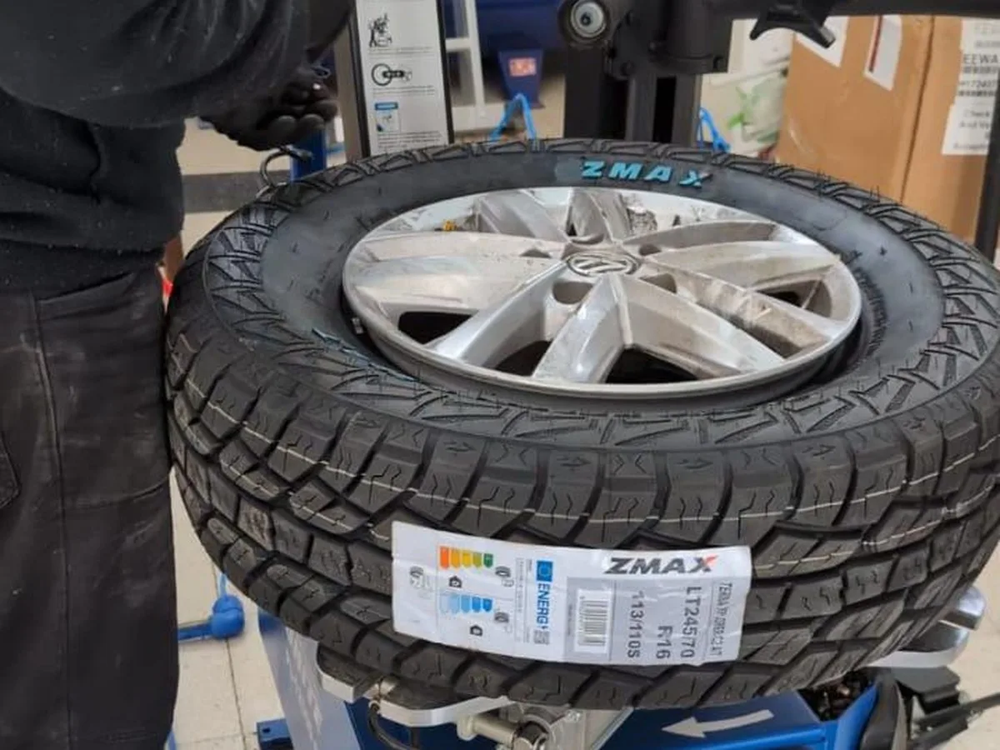
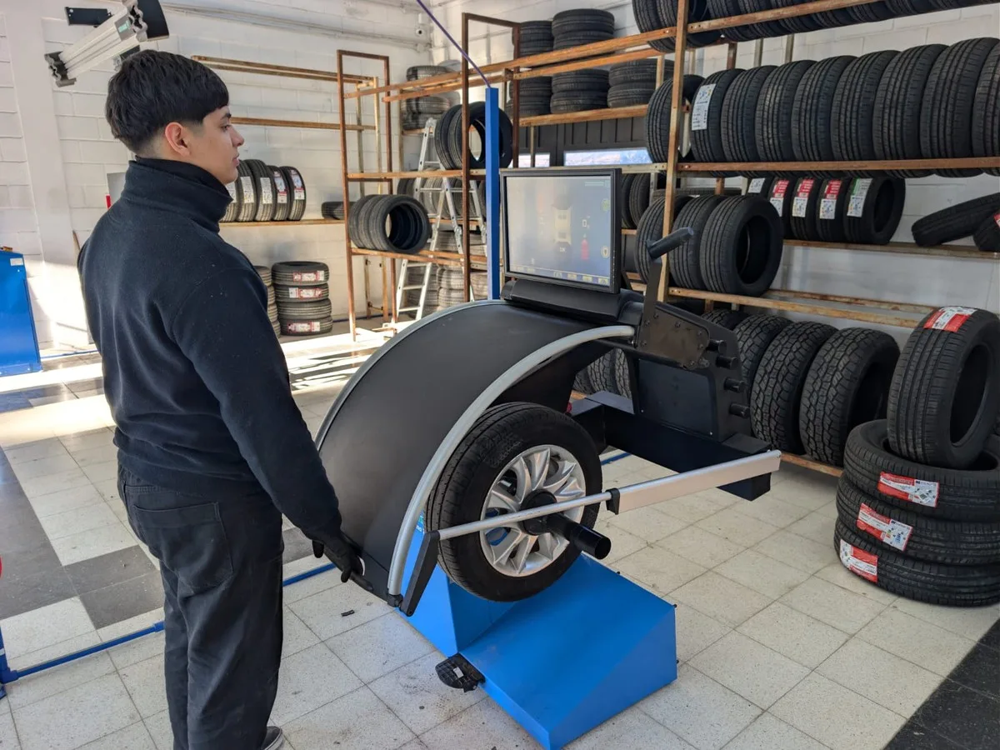
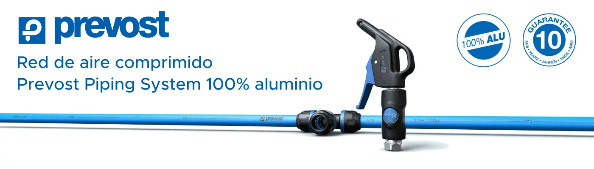

Elevadores
Elevadores Alineadoras
Alineadoras Balanceadoras
Balanceadoras Desarmadoras
Desarmadoras
Cuando una gomería es buena, el cliente lo nota en el resultado: el auto no vibra, no tira para un costado y la rueda vuelve montada sin un rayón. Pero eso no pasa por casualidad. Detrás hay un taller armado alrededor de cada máquina, cada una elegida para un trabajo específico. Este es un recorrido por el equipamiento de Neumáticos Trivium, sucursal Argüello (Av. Donato Alvarez 7971, Córdoba), un taller propio del grupo donde trabajamos con las mismas máquinas que ofrecemos en Trivium Pro.

Alineación: Hofmann Geoliner 630 sobre elevador tijera largo
La alineación es el servicio donde más pesa la tecnología. En Argüello la hacemos con una alineadora 3D Hofmann Geoliner 630, que mide la geometría de la suspensión con cámaras y targets montados en las ruedas, sin cables ni sensores que se rompan. El resultado es un informe de convergencia, caída y avance antes y después del ajuste, que el cliente puede ver en pantalla. Si querés entender el proceso paso a paso, lo explicamos en cómo se alinea un vehículo con una alineadora 3D.
La alineadora trabaja siempre sobre un elevador tijera largo. Las plataformas largas dejan las ruedas apoyadas en platos giratorios a la altura de trabajo, con el auto a la altura justa para el operario y para las cámaras. Nuestro modelo de catálogo, el Elevador Tijera Largo 5500 kg con kit de alineación (PL-C55), tiene plataforma de bajo perfil de 380 mm, bloqueo neumático automático y válvula de seguridad. Si dudás entre este formato y uno de cuatro columnas, tenés la comparativa en 4 columnas vs. tijera largo.

Planchas de gomería: elevador tijera PL-45H
Para rotación, cambio de neumáticos y revisión rápida, no hace falta subir el auto a dos metros. Lo que se necesita es un elevador que quede al ras del piso cuando está abajo y que suba rápido. Eso es la plancha de gomería, y en nuestro taller usamos el Elevador Tijera Gomería 4500 kg PL-45H: capacidad de 4.500 kg, altura mínima de 100 mm, sobrepiso (no requiere obra civil) y desbloqueo neumático. Tiene estructura paralela y válvula antiexplosión.
La ventaja práctica es el flujo de trabajo: el auto entra, sube, se sacan las cuatro ruedas, se balancean y vuelven a su lugar sin que el operario tenga que agacharse ni mover el vehículo. Es la base del servicio de balanceo y rotación, que tiene mucho más peso en la facturación de una gomería de lo que parece (más en la importancia de ofrecer rotación de neumáticos).
Arme y desarme: desarmadora con brazo auxiliar PL-1256S
Montar un neumático moderno sin dañar la llanta es cada vez más difícil: perfiles bajos, llantas de aleación y flancos rígidos. Para eso tenemos la Desarmadora de Ruedas con Brazo Auxiliar PL-1256S Trivium Center: columna basculante neumática y totalmente automática, brazo auxiliar de 360° y sujeción para llantas de 12" a 26". El brazo auxiliar es el que sostiene el flanco del neumático mientras se monta, y es lo que permite trabajar perfil bajo y run flat sin forzar la cubierta. Lo detallamos en para qué sirve el brazo auxiliar.

Balanceo: Hofmann Geodyna 7600P
Una rueda mal balanceada se siente en el volante a 90 o 100 km/h, y a la larga desgasta rótulas, amortiguadores y la propia cubierta. La balanceadora que usamos es la Hofmann Geodyna 7600P: pantalla táctil, medición con tecnología Smart Sonar y sujeción Power Clamp, iluminación de llanta, ayuda easyWEIGHT para ubicar el contrapeso y un ciclo de equilibrado de solo 4,5 segundos. La velocidad importa tanto como la precisión, porque un auto con cuatro ruedas por balancear no debería llevar más de unos minutos en la máquina.
También es una máquina que se autocalibra, un detalle que parece menor y no lo es: lo explicamos en qué es la autocalibración y por qué importa.

Lo que no se ve: aire comprimido Prevost
Todo lo anterior depende de algo que casi nadie fotografía: el aire. La desarmadora, los elevadores con bloqueo neumático y las herramientas necesitan aire seco, constante y sin caídas de presión. Por eso el taller trabaja con una red de aire comprimido Prevost Piping System: aluminio, sin soldadura, sin óxido, con interior liso que reduce la pérdida de carga y garantía de 10 años. Al ser modular, se puede ampliar o reconfigurar cuando el taller suma un puesto, sin rehacer la instalación. El Prevost Piping System se proyecta e instala a cargo de Trivium Center, en todo el país.
Herramientas neumáticas Kuani
El último eslabón es la herramienta en la mano del operario. Usamos llaves de impacto neumáticas Kuani, una línea pensada para uso intensivo en taller. Por ejemplo, la KI-1478 entrega 678 Nm de par máximo en reversa y 10.000 rpm libres, con solo 113 mm de largo, lo que permite llegar a tuercas de rueda con poco espacio. Son las que aflojan y ajustan las cuatro ruedas en segundos y con torque parejo. También hay llaves de crique y el inflador de neumáticos digital Kuani, para dejar cada neumático a la presión exacta. Todo el surtido está en herramientas neumáticas.
Un taller, un flujo
Lo importante de un taller no es cada máquina por separado, sino cómo se conectan: el elevador libera las ruedas, la desarmadora monta, la balanceadora equilibra, las herramientas neumáticas ajustan y la alineadora termina de afinar la geometría, todo alimentado por una red de aire bien dimensionada. Si estás armando o ampliando tu gomería, mirá también equipamiento esencial para comenzar tu taller de neumáticos y cómo instalar una gomería. La instalación de los equipos se cotiza aparte.
Las máquinas de este artículo, en nuestro catálogo:

Elevador Tijera Largo 5500 kg - Con Kit De Alineación

Elevador Tijera Gomería 4500 kg PL-45H

Desarmadora De Ruedas Con Brazo Auxiliar PL-1256S Trivium Center

Balanceadora de Ruedas Hofmann Geodyna 7600P

Red de Aire Comprimido - Prevost Piping System